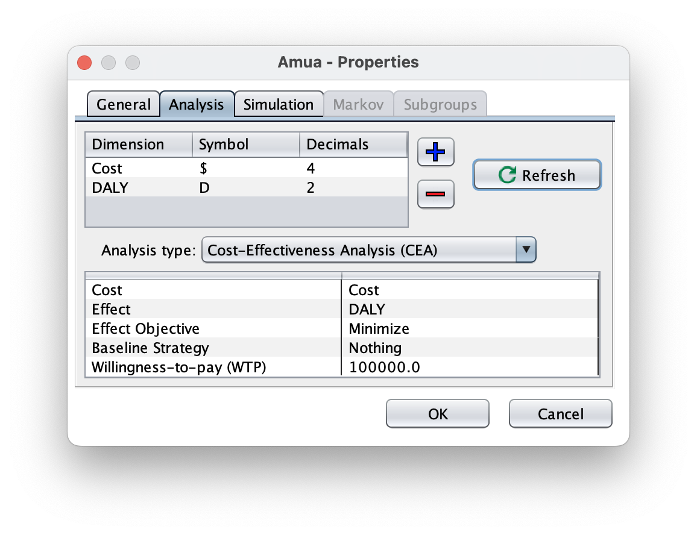
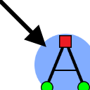

Case Study: DALYs
Decision Trees
Add a DALY Dimension
We now want to add a new outcome dimension: DALYs (Disability-Adjusted Life Years). DALYs are a measure of disease burden, where 0 = perfect health and 1 = death per year lost. For this model, we will assume we have estimated DALYs available for each terminal node.
Instructions:
In Amua, go to Model → Properties → Analysis tab.
Add a new dimension:
Dimension: DALYs
Symbol: D
Decimals: 2
Click Refresh
Because DALY is a gap measure, change the objective to minimize DALYs (analogous to maximizing QALYs)

We can now return to the tree and enter DALY values at each terminal node
| Clinical State | DALYs Lost | Notes |
|---|---|---|
| Untreated | 7.0 | Large loss of expected healthy life years |
| Sick Treated | 2.5 | Some expected healthy life years lost due to time sick and treatment |
| Healthy | 0 | No loss due to disability or premature death |
| Healthy Treated | 0.6 | Some expected healthy life years lost due to treatment |
You can apply these DALY values to terminal nodes in Amua accordingly. Your tree should like this:

Now, you’re ready to perform a cost-effectiveness analysis with DALYs as the outcome!
Click Run Model and check out the CEA Results report.
Markov Models
Add a DALY Dimension
We now want to add a new outcome dimension: DALYs (Disability-Adjusted Life Years). DALYs are a measure of disease burden, where 0 = perfect health and 1 = death per year lost. For this model, we will add Years of Life Lost. To discount these from the start of time and the time of occurrence we will use the built in discounting (from start time) and add discounting from the time of death.
A: Important Parameters
Disability Weights
Since we are using DALYs instead of QALYs, we now use disability weights instead of Quality-of-life (QoL) weights.
| Name | Value | Description |
|---|---|---|
| dw_sick | 0.15 | Disability weight for Sick health state. |
| dw_sicker | 0.37 | Disability weight for Sicker health state. |
| dw_treated | 0.05 | Disability weight for being treated |
Life Expectancy by Age
| Age | LE |
|---|---|
| 0 | 88.8718951 |
| 1 | 88.00051053 |
| 5 | 84.03008056 |
| 10 | 79.04633476 |
| 15 | 74.0665492 |
| 20 | 69.10756792 |
| 25 | 64.14930031 |
| 30 | 59.1962771 |
| 35 | 54.25261364 |
| 40 | 49.31739311 |
| 45 | 44.43332057 |
| 50 | 39.63473787 |
| 55 | 34.91488095 |
| 60 | 30.25343822 |
| 65 | 25.68089534 |
| 70 | 21.28820012 |
| 75 | 17.10351469 |
| 80 | 13.23872477 |
| 85 | 9.990181244 |
| 90 | 7.617724915 |
| 95 | 5.922359078 |
B: Add YLDs
Create A New Outcome
Go to Model > Properties > select the Analysis tab.
Use the blue plus sign (
 )to add Years Lived with Disability (YLD). You can use YLD as the symbol and round on 4 decimals.
)to add Years Lived with Disability (YLD). You can use YLD as the symbol and round on 4 decimals.Click Refresh to apply.
Set the “Analysis Type” to Expected Value (EV)
We want to reset the objective to minimize. In DALYs, we want to decrease the YLDs and YLLs.
Go to the Markov tab and add in the discount rate for YLDs. (3.0)

Add Disability Weights to Model
First you will need to define the disability weights as new parameters. To add a parameter, use the plus sign above the parameter menu ( ). Each parameter needs a name and an expression. Use the defined values from [Model Parameters].
). Each parameter needs a name and an expression. Use the defined values from [Model Parameters].
Now set YLD outcomes equal to the parameters in both strategies. Remember that for YLD, 0 is healthy.
Your model should look like:

Now check () and run () the model to verify that it calculates expected YLD!
| Strategy | YLD | YLD (Dis) |
|---|---|---|
| Status Quo | 2.8697 | 1.7484 |
| Treatment | 3.8058 | 1.9969 |
Add YLLs
Create A New Outcome
Go to Model Properties select the Analysis tab.
Click the blue plus sign (
) to add a new outcome. Add YLL.Click the refresh button
The “Analysis Type” should be still be set to Expected Value (EV) with the object of minimize.
Change outcome to YLLs
Go to the Markov tab and add in the discount rate for YLLs. (3.0)

- Next, we will define cycle-specific payoffs in the model itself based on the values in the tables above. We need to add YLLs for people transitioning from the sick to the dead state.
Add Life Expectancy Table
- We need to add a table to pull the estimated reaminaing life expectancy by age so that we can properly calculate the YLLs.
Select the tables tab and then click the blue plus sign (
) to add a new table.Click Import (

) and select the downloaded documentTipIf you cannot get the import to work, you can copy the table from above and use the paste button
( )to add the data.
Verify that there are no blank rows at the bottom of the table
Name the table
tbl_ref_ltChange the lookup method to “Truncate”
The table window should look like this:

Add Variable
You will need to define
yll_tas a parameter.This will reference the table we just added (tbl_ref_lt)
To properly add YLLs with discounting from the time of death, we will use the following formula:
.png)
Select the variables tab and then click the blue plus sign (
) to add a new variable.Set the name of the variable to
yll_tUsing the formula above to set the expression:
tbl_ref_lt[initial_age + t, 1] * (exp(-log(1+r_disc_health)*t))
Add YLL to the Model
Add the YLL outcome as a one time outcome on the Die (Disease) arm.
After inputting the outcomes, your Markov model should look like this:

Add DALYs
Our final objective is to add DALYs to the markov model. We have seen how to add all the elements but we want to combine them for DALYs.
A: Add A DALY Outcome
In Amua, go to Model → Properties → Analysis tab.
Add a new dimension:
Dimension: DALYs
Symbol: D
Decimals: 2
Click Refresh
Because DALY is a gap measure, change the objective to minimize DALYs (analogous to maximizing QALYs)

Add Outcome
Go to Model Properties select the Analysis tab.
Click the blue plus sign (
) to add a new outcome. Add DALYs.Click the refresh button
Change the “Analysis Type” to Cost-Effectiveness Analysis (CEA).
Set the Cost, Effect, Baseline Strategy and Willingness-to-pay (WTP). Ensure that the Effect Objective is still set to minimize.
Go to the Markov tab and add in the discount rate for DALYs. (3.0)

Next, in the model itself, define the cycle-specific payoffs based on the values in the tables above.
- Every place in the model where there is a value for YLD or YLL, we will put that in DALYs so that it sums them all together.
- For Example: Under sick where it now has($) c_sick; (YLD) dw_sick ; (YLL) 0, we will have ($) c_sick; (YLD) dw_sick ; (YLL) 0 ; (DALY) dw_sick
- Every place in the model where there is a value for YLD or YLL, we will put that in DALYs so that it sums them all together.
After inputting the outcomes, your Markov model should look like this: